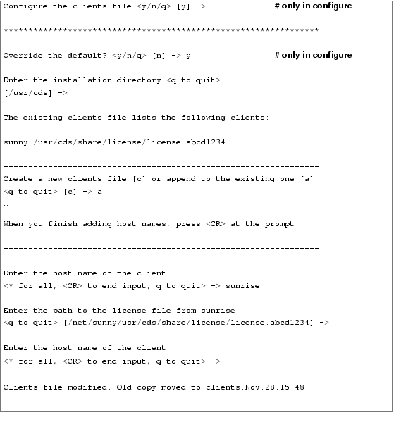
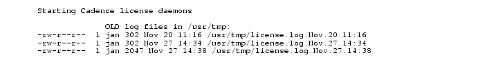
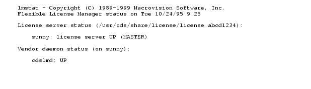
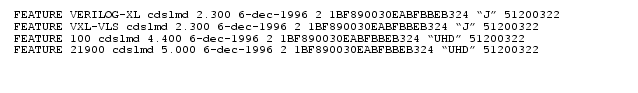

How to Configure Licensing
This chapter contains information about the following topics:
Configuring Licensing
You must configure licensing to use Cadence products. If you do not configure licensing, Cadence products will not run and you will see licensing errors.
Configuring licensing can include
Editing the license file
Creating a script to start the license daemons
Editing the license server's boot script (optional)
Creating a symbolic link
Setting up application clients
Setting up users' workstations
Cadence products do not interfere with other FLEXlm-based software if you configure the Cadence products by following the Cadence procedures.
What Do You Need to Know?
Use these checklists as a guide for gathering the information you need to configure licensing.
Which license configuration does it support
(how many SERVER lines does it have)?If you have a new license file, do you have an encoded or ASCII file?
Is the license-server host ID correct?
Are the products you want this host ID to manage correct?
Is the default Cadence port, 5280, available and usable for Cadence licensing?
Do you need to control access to the Cadence software?
If you want to manage licenses with an options file, does the license file have both node-locked and floating licenses?
If the license daemons should start, what is the
rootpassword, so that you can modify the license-server boot script?How will Cadence products locate the license files?
Which Format Is Your License File?
You can configure licensing several ways, depending on whether you have an encoded license or ASCII file. This table lists some of the differences between the formats.
Easily corrupted if it contains long lines with node-locked licenses. See installation troubleshooting
After several lines of readable text, lines begin with "C_Begin"
Contains only readable text and includes SERVER, DAEMON, and FEATURE lines
Copy the license file to
install_dir/share/licenseor elsewhereLicensing utilities or an editor
Cadence installation software, licensing utilities, or an editor
Licensing utilities or an editor
What Do You Do Now?
Now that you have completed the checklists and you know what type of license file you have, you can proceed to configuring your new license file.
Configuring Licensing with Cadence Utilities
This section describes how to configure licensing using Cadence utilities. Cadence products do not interfere with other FLEXlm-based software if you configure the Cadence products by following the Cadence procedures.
If you received encoded installation information via e-mail, the only way to configure default or customized licensing is by using Cadence installation software. If you have a license file previously configured with Cadence installation software, you can use Cadence installation software, the licensing utilities, or a text editor. If you use the utilities, you have a choice between using one utility or several utilities.
Summary of License Configuration Utilities
Using Cadence Installation Software
Configuring the License Server
Summary of License Configuration Utilities
Cadence installation software and the licensing utilities modify the files listed below.
Runs
the configure utility. Choose Configure Installed Products from the Main Menu of the Cadence installation software utility, then choose System Configuration.install_dir/share/license/rc.licinstall_dir/share/license/clients/etc/rc.local,/etc/inittab/sbin/rc2.d,/sbin/rc3.d,Runs the lic_config -x, the mkclients -x utility, the rc.add utility, creates the
toolslink, starts the licensing daemons if you request it, or forces the license daemons to read the new license file.Modifies the license-server host name, daemon path, port number, and
optionsfile path.install_dir/share/license/rc.licCreates or modifies the script to start the correct daemon and create the log file.
install_dir/share/license/clientsAdds the host names of workstations that can use the license file (if applications use the
clientsfile to locate the correct license).Appends the script to start license daemons to the end of the license-server boot script. Depending on your operating system, you will need
rootpermission to access or edit/etcfiles.inittabScript that runs when an HP, IBM, or Solaris computer boots.
/sbin/rc2.dor/sbin/rc3.ddirectory, or/etc/rc2.ddirectory( rc2.d/S??cds_lic)
Using Cadence Installation Software
To use Cadence installation software, complete the following steps:
Gather the information you need by completing the checklist.
Log in as
cdsmgror a non-rootaccount on the license server.Verify the host ID of the license server.
The computer returns the host ID expected by Cadence licensing software .
Note the host ID. Replace
HOSTIDin these procedures with the host ID of the license server as returned bylmhostid. You can also use operating system commands to retrieve the specific host ID needed.Choose *** SoftShare Licensing Server HOSTID.
The
HOSTIDis the host ID of the license server in the license file. The ASCII configuration utility starts in the Cadence installation software console window. Respond to the prompts as described in the next section, "Configuring the License Server."If you see a message that indicates your license file is corrupt, the license file is probably an ASCII license file that has not been previously configured with Cadence installation software. Use the licensing utilities or an editor.
Configuring the License Server
Cadence installation software runs configure, which runs lic_config
-x,which edits the license file and theclientsfile, and creates therc.licscript that starts the license daemons.Cadence licensing requires that both the
lmgrdandcdslmddaemons be running. Using a script to start the license daemons is a convenient way to always
Let users start the license daemons easily
Start the license daemons with the same options
Use the same log file (old log file renamed in the same location)
Use the same license file
When you run the utilities, descriptive text precedes the prompts to help you determine the correct response. Respond to the prompts as described.
Continue from Cadence installation software or the configure utility, or start the lic_config utility.
Type the path to the top directory which stores the installed Cadence products.
This is the installation directory referred to as
install_dir. This path is the basis for all the information in the license file. Occasionally, you need to use a different path, such as one starting with/net, in the licensing files. The path must be to a Cadence Hierarchy that includestools/bin,share/license, and other directories. The prompts continue with this prompt if the utility cannot find thetoolslink.If the
toolslink does not exist, create it by typingyat the promptType
yif you want to configure the license file or therc.licstartup script (only in the configure utility).
If you type
n, the software prompts you to configure theclientsfile (Configuring the Clients File).
The computer you are configuring is the license server
The licensing debug log file is
/usr/tmp/license.logThe license server uses the lmgrd license daemon in the default path
The license server does not use an
optionsfileAll workstations have permission to access the license file
The
lmgrdlicense daemon starts with the default options
- lmgrd
-2 -p- Only members of the
lmadmingroup can runlmdown,lmremove, andlmreread. Ifrootshould be able to uselmdown,rootmust be in thelmadmingroup. If nolmadmingroup exists, onlyrootor a user belonging to group0can use these utilities.
lmgrd -x lmdown- No one, not even
root, can runlmdown. The license daemons can only be stopped withkill. Do not usekill -9. Do not kill the license daemons while licenses are in use because the users risk losing their data.
install_dir/tools.xxx/binConfigure license file license.abcd1234?
<y/n/q> [y] ->
To use the default licensing configuration, answer the prompt to override the defaults by typing
n. After you specify the license file, go to Configuring the Clients File .To customize licensing, answer the prompt to override the defaults by typing
y.
Type the host name of the license server with the specified
HOSTID.Type the port number that the license daemons will use.
Type the path to the daemon executable, usually
If you do not know the path, press
Return. You can continue (even if the path does not exist) and correct the path later.Type the path to the
optionsfile.
You can use an
optionsfile to manage licensing and restrict users beyond the limits provided by the license file. For example, you can restrict licenses to specific users, displays, workstations, or internet addresses with anoptionsfile.Type the path to the installation directory to use in the
rc.licscript that starts the license daemons.
This utility creates the
rc.licscript to start the license daemons after you supply the requested information.Type the name of the license file that the license daemons started with
rc.licwill use.Type the location of the debug log file for this license server.
The default location is in
/usr/tmpbecause the software will not delete a file in that location when the license server reboots.Type the lmgrd options to use when starting the license daemons on this license server.
You can minimize the chance of users shutting the license daemons down inadvertently by not using the default options. For example, for one method, type
The lic_config utility stops here and prompts you to run the mkclients utility if workstations will locate the license file with the
clientsfile. Cadence installation software and the configure utility continue in Configuring the Clients File.Sample Dialog
For example, if you were modifying the licensing on a license server named
sunnywith a host ID ofabcd1234, without the usual descriptive text, the prompts from the configure utility and lic_config -x utility would look like this. The defaults are in square brackets.Enter the top installation directory <q to quit> [/usr/cds] -> Edit the license file or the startup script now? # only in lic_config -x <y/n/q> [y] -> y Override the defaults? <y/n/q> [n] -> y # only in configure Configure license file license.abcd1234? <y/n/q> [y] -> y Configuring license.abcd1234... Enter the hostname of the computer system with hostid abcd1234 <q to quit> [sunny] -> Enter the TCP port number <q to quit>
[5280] ->Enter the path to the cdslmd daemon for sunny <q to quit> [/usr/cds/tools/bin/cdslmd] -> Enter the path to cdslmd's OPTIONS file for sunny <CR for none, q to quit> -> These next prompts affect the information in the rc.lic script that starts the license daemons. --------------------------------------------------------------- The existing rc.lic uses the following installation directory '/usr/cds' Enter the installation directory the license daemons should use <q to quit> [/usr/cds] -> --------------------------------------------------------------- The existing rc.lic uses the following license file '/usr/cds/share/license/license.abcd1234' The following license files exist under the directory: license.abcd1234 license.abcd1234.Nov.20.11:03 license.klmn1234 Enter the license file the license daemons should use <q to quit> [/usr/cds/share/license/license.abcd1234] -> --------------------------------------------------------------- The existing rc.lic uses the following license debug log '/usr/tmp/license.log' Enter the debug log file the license daemons should use <q to quit> [/usr/tmp/license.log] -> --------------------------------------------------------------- The existing rc.lic uses no lmgrd daemon options Enter the new lmgrd daemon option [no options] -> -s 180 Configuring the Clients File
The
clientsfile is one of several methods by which your Cadence applications locate licenses. If you do not use aclientsfile, go on to
Editing the License Server's Boot Script.Cadence installation software and the configure utility continue by running mkclients -x. Respond to the continuing prompts.
Continue from Cadence installation software or the configure utility, or start the mkclients utility.
Type the path to the top directory which stores the installed Cadence products (only in the mkclients -x utility).
This is the installation directory referred to as
install_dir. This path is the basis for all the information in theclientsfile. Occasionally, you need to use a different path, such as one starting with/net, in the licensing files. The path must be to a Cadence Hierarchy that includestools/bin,share/license, and other directories. The prompts continue with this prompt if the utility cannot find thetoolslink.If the
toolslink does not exist, create it by typingyat the prompt.To configure the
clientsfile, typey(only in the configure utility).If a clients file exists, specify whether you want to add to the existing file or create a new file.
To allow all workstations to access this license server, type
nto use the defaults (only in the configure utility).
If you do not override the defaults and then press Return for the host name, all workstations can use the Cadence products.
To identify specific workstations that can access this license server, type
yto override the defaults and follow these steps:
If you override the defaults and then press Return for the host name, only this workstation can use the Cadence products.
Sample Dialog
For example, if you were adding
sunriseto aclientsfile on a license server namedsunny,sunnyis already in the license file. The prompts from the mkclients -x utility would look like what follows. Note thatsunnyandsunrisewill be the only workstations that can access the license file.
Editing the License Server's Boot Script
The rc.add utility adds the
rc.licscript to the license server's boot script so that the license-server daemons start when the computer reboots. The utilities also let you start the license daemons now or force running license daemons to read the new license file.
Continue from Cadence installation software or the configure utility, or start
rc.lic.Type
yto add therc.licscript to the license server's boot script (only in the configure utility).
As
rootyou can addrc.licto the license server's boot script. The rc.add utility is not interactive.
Type the
rootpassword at the prompt (only in the configure utility).Type
exitto exitroot(only in the configure utility).Type
exitto return to Cadence installation software (only if you're in Cadence installation software).If you are Setting Up Fault-Tolerant License Servers, type
nso that you do not start the license daemons (only in the configure utility).
You must start the license daemons on each license server within three minutes of starting the license daemons on the first license server.
If the Cadence license daemons are already running, the software prompts you to restart the license daemons or force the license daemons to read the license file.
If the Cadence license daemons are not running, type
yat the prompt to start the license daemons.From the Cadence installation software Main Menu, choose Test Installed Products.
If you have multiple license servers, repeat this entire procedure (beginning with Using Cadence Installation Software) on each license server.
Sample Dialog
For example, the output from the rc.add utility looks like this.
Edit sunny's boot script? <y/n/q> [y] -> # only in lic_config -x Type the root password at the prompt and then type './rc.add'. Once rc.add completes and the UNIX prompt returns, type 'exit' to continue configuration. Password: # rc.add Copying the startup script (rc.lic) to /etc directory . . . Startup script (rc.lic) added to /etc/rc.local For more information about licensing utilities, see the
'Software Installation and License Management Reference'.# exit If you were able to become root and run rc.add, you are done editing the boot script. At this point, you should be able to start the license daemons. However, you can *only* start them successfully on the computer specified as the license server. Type 'n' to the next prompt if o The daemons are already running o You are configuring the license server files on another workstation **************************************************************** Start the license server daemons? <y/n/q> [n] -> y Starting Cadence license daemons Old debug log files in /usr/tmp: -rw-r--r-- 1 cdsmgr 1127 Nov 28 14:38 /usr/tmp/license.log.Nov.28.14:38
Configuring Licensing without Utilities
This section describes how to configure licensing using an editor. Cadence products do not interfere with other FLEXlm-based software if you configure the Cadence products by following the Cadence procedures.
When configuring licenses, you may also need to modify some of these files:
install_dir/share/license/rc.licinstall_dir/share/license/clients, /
/etc/rc.localetc/inittabCreating the Tools Link
If you do not configure the software with Cadence installation software or the other licensing utilities, or if you do not have a
toolslink, you must create atoolslink by following these steps:
tools.xxxis the platform-specific directory listed below.
tools.hppatools.sun4vtools.ibmrs
The
toolslink lets the Cadence software find the appropriate executable files for your computer's architecture easily. The section on the Cadence Hierarchy illustrates this link.Modifying the License File
Even though your license files are for specific host IDs, the host name does not identify the license server. You must add the host name and verify the daemon path in the license file.
To edit the license file, follow these steps:
Gather the information you need by completing the checklist.
On the license server, log in as
cdsmgror another non-rootaccount.On the license server, change to the
install_dir/share/licensedirectory.Edit the license file with an editor.
Compare your license-server host ID to the host ID on the
SERVERline in the file.Add the correct host name on the
SERVERline.
Replace
Cadence_SERVERwith the host name for each corresponding host ID. A sample line for a license server with a host ID ofabcd1234isEdit the port number (optional).
Replace
port_numberwith the number of the port that Cadence licensing software should use. The Cadence default is5280, but you can specify any unused port.On the
cdslmdDAEMONline, type the absolute path to thecdslmddaemon.Creating the Clients File
The
clientsfile is one of several methods by which your Cadence applications locate licenses. If you do not use aclientsfile, go on to Starting the License Daemons.Follow the steps below to create
install_dir/share/license/clients.
On the license server, log in as
cdsmgror another non-rootaccount.Edit the new
clientsfile with an editor.
Add the host name (
hostname) and the correct path to the license file (license.HOSTID) for each workstation that can run Cadence software. This is the path that the workstation uses to find the license file, such as
For a local license file, use the absolute path to the license file. For a remote license file, use the network path, such as
/net, to the license file. Use an asterisk (*) for hostname to let all application clients access the license file, such asIf you are configuring fault-tolerant license servers, specify the
port@hostsyntax as follows:If you are configuring fault-tolerant license servers and if
install_diris not identical on each license server (for example, the network sees some of the paths as/net), add lines to theclientsfile to identify the differentinstall_dirpaths, such as
sunny /usr/cds/share/license/license.abcd1234
sunny /net/sunrise/usr/cds/share/license/license.abcd1234Save the file and exit the editor.
If you are setting up fault-tolerant licensing, copy the
clientsfile to the second and third license servers.Creating the Daemon Startup Script
Cadence licensing requires that both the
lmgrdandcdslmddaemons be running. Using a script is a convenient way to always
Let users start the license daemons easily
Start the license daemons with the same options
Use the same log file (old log file renamed in same location)
Use the same license file
To create a script to start the license daemons, follow these steps:
Copy
rclic.sampleto/etc/rc.lic
/etc/rc.lic/etc/rc.licSolaris (optional)
HP Series 700 (optional)
IBM RS/6000 (optional)
Open the new
/etc/rc.licfile with any text editor.
The sample file contains place-holding variables, which you need to replace with your own configuration information.
If you want to run your own log-file filter, incorporate your filter into your
rc.licfile.Give the file the correct permissions.
chmod 6744 /etc/rc.licchmod 744 /etc/rc.licc hmod 6744 /etc/rc2.d/S??cds_lic
Editing the License Server's Boot Script
If you want the license daemons to start every time the license server reboots, add the startup script to the license server's boot script by following these steps:
To save the existing boot script listed below, copy it to a different name.
/etc/inittab/etc/inittab
Starting the License Daemons
After you configure the license server (or all license servers in fault-tolerant licensing), start the license daemons without rebooting the license servers.
Note: You can configure other licensing options either now or later. For example, you can use an
optionsfile to define work groups or reserve copies of a feature for specific users. If you decide to useoptionslater, you will need to stop and restart the daemons at that time.
If you are setting up fault-tolerant licensing, start the daemons on each license server within three minutes of starting the first daemon. To start the license daemons, follow these steps:
On the license server, log in as
cdsmgror another non-rootuser.If the Cadence license daemons are already running, the software prompts you to restart the daemons or force the license daemons to read the license file.
If you are installing software for the first time or the license daemons are not running, type
If this is not the first time you are starting the daemons and you are directing the daemon output to the same log file, a message might indicate the location of earlier debug log files.
If you are adding software, use
lmrereadby typing
For fault-tolerant license servers, use
lmrereadon one license server.If you have combined your Cadence license file with non-Cadence FLEXlm-based licenses, specify the desired license daemon to reread the license file, such as.
If the new license file contains changes to licenses currently in use, users must exit and restart the applications to use the new features.
If you see a "
Trying connection tohost" message, stop and restart the daemons.
This message indicates that you are setting up fault-tolerant licensing. You must start the license daemons on all three license servers within three minutes. If you don't start the daemons on each server within three minutes, the first daemon shuts down. You cannot change this three-minute requirement.
If you are setting up multiple independent license servers, repeat these steps on each license server.
Make sure that the license daemons are up and running.
You see messages similar to these.
If the license server is
UP, thelmgrddaemon is running. If thecdslmdstatus isUP, thecdslmdvendor daemon is running.
If the daemons are not running, start them.
If you are using fault-tolerant licensing, complete this step on one license server.
If you are using multiple independent license servers, complete this step on each license server.
Test the changes to the boot script (optional).
Determine if the license daemons start when the license server reboots by rebooting the license server now. If the setup is correct, the license daemons start, and the file systems mount and link. A computer will not boot properly if one of the essential files, such as one of those listed below, is not correct.
/etc/inittab,/etc/checklist,/etc/rc.lic/etc/inittab,/etc/filesystems,/etc/rc.lic/ etc/rc2.d/S??cds_lic,/etc/vfstab
To set up multiple independent license servers, repeat these procedures (beginning with Creating the Tools Link on each license server).
After You Configure Licensing
After you configure licensing, you still have a few steps left before you can use the Cadence products.
Backing Up Your Licensing Files
Now that you have configured licensing, it is a good idea to back up the files you just configured, such as the
install_dir/share/license/*file.
Letting Users Access Cadence Products
To run licensed Cadence products, users must be able to locate the Cadence products and the license files, either locally or remotely.
For the C-shell, users need to edit their
~/.cshrcfiles.
Add the Cadence products to their search path.
Specify how to locate the license file.
To locate the license files with the
clientsfile, you do not need to do anything.Depending on the method of locating the license files, you need to set other variables.
Source the file.
For the Bourne or Korn shell, users need to edit their
~/.profilefiles.Specific Cadence applications require additional paths, such as
If users will be running Cadence software in the background, they need to make sure their
sttysettings do not prevent it.
Cadence software usually writes information to the terminal. Occasionally, users have terminals set up to prevent software running in the background from writing to the terminal. If you plan to run the Cadence software in the background, follow these steps:
Determine if the workstation configuration prevents background jobs from writing to the terminal by typing
If you see
tostopwithout a dash (as the following example shows), background programs cannot write to the terminal. The programs hang.
Users on the above workstation cannot run Cadence products in the background. They must run them in the foreground without the ampersand (&), such as
awbinstead ofawb &. Or, they can reset the terminal and then invoke the tool in the background.To run Cadence software in the background, reset your terminal by typing
Managing Licenses
You can restrict user access and manage licensing beyond the limits provided by the license file. For example, use an
optionsfile or aclientsfile to restrict licenses to specific workstations even without node-locked licenses in the license file.You can use an
optionsfile to
Return idle licenses to the license pool
Define groups so that you do not have to list individual users or hosts
Reserve copies of a feature for specific workstations or specific users
Allow or prevent specific users from using certain products
Specify an enhanced log file
Not all Cadence products support all options equally. Search your product's documentation in cdsdoc to see which options your product recognizes.
Creating an Options File
To create an
optionsfile, complete the following steps:
If you want to restrict certain products, determine the licenses the products use.
A product can require more than one unique license feature (as listed in Product to Feature Map). A
FEATUREline in the license file lists each license.For example, to manage access to Verilog-XL, you must specify each feature used by Verilog-XL. The license file lists all licensed features, so it includes these entries as well as many others.
The
License_Map.HOSTIDfile corresponding to this license file includes these lines.
If you restrict licenses, the restriction applies to the first FEATURElines encountered in the license file. For example, if you reserve five licenses, you reserve the first five licenses in the license file, even if they are node locked. As an example, your license file has these 3FEATURElines for the same license,
You have reserved both the node-locked and the first line of floating licenses. Restricting licenses is a complex procedure. For more information, see the FLEXlm User Guide at
http://www.macrovision.com
To use groups instead of listing individual users or hosts, add
GROUP,USER_GROUP, orHOST_GROUPlines to theoptionsfile.
Creating groups usually makes the
optionsfile easier to maintain because you do not need to list individual users or hosts. The FLEXlm license manager cannot use UNIX groups.
You concatenate multiple
GROUPandUSER_GROUPlines on one list.
For example, to create a
cadgroupwith usersgary,julie, andjan, the entry is
After you create the group, you can reserve, include, or prevent
cadgroupfrom using certain products. To define a group of workstations for which you can include, exclude, or reserve licenses, useHOST_GROUPlines.
Reserving Licenses

To reserve licenses, add a RESERVEline to theoptionsfile.
RESERVE # featuretypename
#Number of licenses reserved.
featureName of the feature reserved.
typeGROUP,USER,HOST,DISPLAY, orINTERNETaddress. The FLEXlm license manager cannot use UNIX groups.
nameName of the user group, host, display, or Internet address for the restricted feature. The Internet address uses then.n[[.n].n]format and can include asterisks as wildcards.
For example, to reserve one copy of Verilog-XL for a user named
jan, theoptionsfile entry is
RESERVE 1 VERILOG-XL USER jan
RESERVE 1 VXL-VLS USER jan
RESERVE 1 100 USER jan
RESERVE 1 21900 USER jan
...
You can reserve licenses for a specific display. In an X Window SystemTM environment, a user can run applications from several workstations while always using one particular display. You can include a
DISPLAYentry in theoptionsfile.To reserve a specified number of licenses for
cadgroup, the entry might be
RESERVE 3 VERILOG-XL GROUP cadgroup
RESERVE 3 VXL-VLS GROUP cadgroup
RESERVE 3 100 GROUP cadgroup
RESERVE 3 21900 GROUP cadgroup
Timing Out Idle Licenses
To have products return their licenses to the license pool when they are idle, add a TIMEOUTline to theoptionsfile.
As long as users have the license checked out, the license is unavailable to anyone else. If no more licenses are available for that product, no one else can use the product. However, the product, not the user, determines when the product is idle (search your product's documentation in cdsdoc to determine if your product supports
TIMEOUT).Depending on your product, you can specify how long a license can be inactive before being available for someone else. If you set a time-out for a feature and another user requests the feature when no more licenses are available, a license that has been inactive for the specified time returns to the license pool for the user requesting it.
If your product supports
TIMEOUT, you can set a maximum amount of time (in seconds) that a license can remain inactive.
TIMEOUT feature seconds
TIMEOUT concept 1800
Restricting Access
To allow or prevent access to Cadence products, add INCLUDE,EXCLUDE,INCLUDEALL, andEXCLUDEALLlines to theoptionsfile.
INCLUDE feature type nameEXCLUDEfeature type nameINCLUDEALLfeature type nameEXCLUDEALLfeature type name
If you use an INCLUDEline, you automatically exclude everyone else in that category (USER,GROUP,HOST,DISPLAY, orINTERNET). For example, if you include one user, you must specify all users to include those who can use the license. The number ofUSER,GROUP,HOST,DISPLAY, orINTERNETaddresses that you want to restrict determines whether it is easier to use anINCLUDEor anEXCLUDEline.
EXCLUDEthose listed
INCLUDEthose listed, but exclude everyone elseIf there is no
EXCLUDEorINCLUDElist, everyone can use theFEATUREIf there is an
EXCLUDEorINCLUDElist for aFEATURE, no one else can use theFEATUREThe software excludes someone on both the
INCLUDEandEXCLUDElistsFor more information, refer to the Macrovision web site:
http://www.macrovision.com
In the example that follows, including a user named
janto use Verilog-XL forces you to specify everyone else who should be able to access the feature, such as thecadgroup.
INCLUDE VERILOG-XL USER jan
INCLUDE VXL-VLS USER jan
INCLUDE 100 USER jan
INCLUDE 21900 USER janINCLUDE VERILOG-XL GROUP cadgroup
INCLUDE VXL-VLS GROUP cadgroup
INCLUDE 100 GROUP cadgroup
INCLUDE 21900 GROUP cadgroup
In the example that follows, including a host workstation named
sunnyforces you to specify the name of every host that should be able to access the feature.
INCLUDE VERILOG-XL HOST sunny
INCLUDE VXL-VLS HOST sunny
INCLUDE 100 HOST sunny
INCLUDE 21900 HOST sunny
In the example that follows, including a display named
sundown:0forces you to specify every display that should be able to access the feature.
INCLUDE VERILOG-XL DISPLAY sundown:0
INCLUDE VXL-VLS DISPLAY sundown:0
INCLUDE 100 DISPLAY sundown:0
INCLUDE 21900 DISPLAY sundown:0
In the example that follows, including an Internet address of
192.12.13.*forces you to specify every internet address that should be able to access the feature.
INCLUDE VERILOG-XL INTERNET 192.12.13.*
INCLUDE VXL-VLS INTERNET 192.12.13.*
INCLUDE 100 INTERNET 192.12.13.*
INCLUDE 21900 INTERNET 192.12.13.*
To exclude a user, group, host workstation, display, or Internet address from the list of authorized feature users, use the following:
EXCLUDE VERILOG-XL USER jan
EXCLUDE VERILOG-XL GROUP cadgroup
EXCLUDE VERILOG-XL HOST sunny
EXCLUDE VERILOG-XL DISPLAY sundown:0
EXCLUDE VERILOG-XL INTERNET 192.12.13.115
You can even manage all features served by the Cadence daemon,
cdslmd.EXCLUDEALLprevents a user, host, group, or display from using all features served bycdslmd(or all daemons in the license file).INCLUDEALLlets a user, host, group, or display use all features served bycdslmd.
INCLUDEALL type nameEXCLUDEALLtype name
Limiting Log-File Messages
To limit the messages recorded in the debug log file, add a NOLOGline to theoptionsfile.
Because the license daemons write many status messages to the debug log file, the file can grow quickly. To slow the growth of the file, you can limit the logging of several licensing messages. However, if you turn off the messages,
gen_reportcannot include the information in reports, which can cause the statistics to be inaccurate.
NOLOG IN | OUT | DENIED | QUEUED
INDoes not record licenses checked in.
OUTDoes not record licenses checked out.
DENIEDDoes not record licenses denied, licenses not available, or when an excluded user tries to check out a license.
QUEUEDDoes not record when a user chooses to queue for an available feature.Search your product's documentation in cdsdoc to see if your product supports queueing.
For example, to avoid logging messages about queueing (if it is available), use
NOLOG QUEUED Note: Cadence no longer provides the gen_report utility. For an enhanced report generator that reads the new FLEXlm report log files, contact a third-party vendor.
Creating Enhanced Log Files
If you want to use a third-party report generator to create detailed reports, specify a report log file in the optionsfile.
You can generate additional usage information from the REPORTLOG log file, a non-ASCII log file, by using third-party report generators.
REPORTLOG + file_name
After Modifying the Options File
If your license file contains both node-locked and floating licenses, follow the steps in When Your License File Contains Both Node-Locked and Floating Licenses.
If the license daemons are already running, stop and restart them.
Setting Up Fault-Tolerant License Servers
In fault-tolerant licensing, each license server needs the Cadence licensing software and a copy of the same or equivalent license file and the optional
clientsandoptionsfiles.To set up fault-tolerant license servers, follow these steps:
After installing and configuring the first license server, install the Cadence licensing software tools using Cadence installation software on the second and third license servers.
Copy the licensing files to the second and third license servers.
Copy the license file to the second and third license servers.
You must list the license servers in the same sequence in each license file. You need to edit the
install_dirpaths ifinstall_diris not the same path on each license server.Copy the
clientsfile (if used) to the second and third license servers.Edit the
clientsfile on each license server ifinstall_diris not the same path on each license serverCopy the
optionsfile (if used) to the second and third license servers.Start the license daemons on each license server within three minutes of starting the first daemon.
Users starting the license server daemons must have write permission to the debug log file.
Running Two Versions of Cadence Software
If you want to continue running your older Cadence software while also letting some users run the newer software, follow these steps:
Use Cadence installation software to install the new software in a different hierarchy.
Stop the licensing daemons.
Configure licensing (license file,
clientsfile,rc.lic) for the new software with Cadence installation software, the licensing utilities, or with an editor.From the old hierarchy, create symbolic links to the new licensing files.
The new license file lets the older software run, but you must use the newer license files and license daemons. To use both versions, link the old license files to the newer files.
Make sure workstations can access the new license file.
If the license daemons are already running, stop them.
Start the license daemons.
Users specify the hierarchy to use by setting their search paths to point to the correct
install_dir/tools/bin.
Specifying Time-Outs
You can specify several different types of time-outs that affect licensing.
Server-Server Time-Out
In a fault-tolerant configuration, you can specify the number of seconds in which the license daemons must connect to each other if you start the license daemons with the
lmggrd-toption. The default time-out is 10 seconds. There is no maximum.
Client-Server
On a busy network or if the license server is busy with other tasks or with a large number of application clients, products are not able to check licenses out when the connection to the license server times out before the server can return a result to the client.
You can increase this time limit by specifying the number of seconds in which to time out between client workstation and license server. Use the environment variable
CDS_LIC_TIMEOUT. The default is 10 seconds. There is no minimum or maximum.For example, to have a connection between the application client and the license-server time-out if you have not received a response within three minutes, add this line to the user's
~/.cshrc.setenv CDS_LIC_TIMEOUT 180
Idle Client
You can specify the maximum amount of time that an application can run without some activity before returning licenses to the license pool. All applications do not support this time-out.
For support, see http://www.cadence.com/support
or try Cadence's SourceLink service.
Copyright © 2004, Cadence Design Systems, Inc.
All rights reserved.
Legal notices and trademark attributions